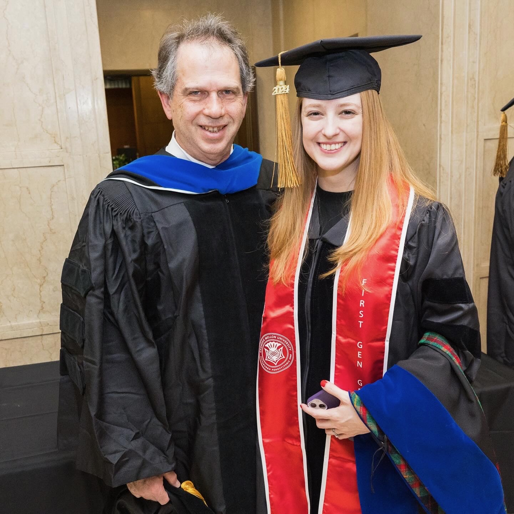

Amazon
Aliquam ut ex ut augue consectetur interdum. Donec hendrerit imperdiet. Mauris eleifend fringilla nullam aenean mi ligula.
I'm an Applied Scientist in Artificial Intelligence at Amazon.
I earned my PhD in Physics from Carnegie Mellon University.
I worked in observational Cosmology as a member of the Dark Energy Survey.
I love dancing, lifting, learning, and traveling.

Aliquam ut ex ut augue consectetur interdum. Donec hendrerit imperdiet. Mauris eleifend fringilla nullam aenean mi ligula.

Aliquam ut ex ut augue consectetur interdum. Donec hendrerit imperdiet. Mauris eleifend fringilla nullam aenean mi ligula.
Aliquam ut ex ut augue consectetur interdum. Donec hendrerit imperdiet. Mauris eleifend fringilla nullam aenean mi ligula.

Aliquam ut ex ut augue consectetur interdum. Donec hendrerit imperdiet. Mauris eleifend fringilla nullam aenean mi ligula.
Aliquam ut ex ut augue consectetur interdum. Donec amet imperdiet eleifend
fringilla tincidunt. Nullam dui leo Aenean mi ligula, rhoncus ullamcorper.
Augue consectetur sed interdum imperdiet et ipsum. Mauris lorem tincidunt nullam amet leo Aenean ligula consequat consequat.
Augue consectetur sed interdum imperdiet et ipsum. Mauris lorem tincidunt nullam amet leo Aenean ligula consequat consequat.
Augue consectetur sed interdum imperdiet et ipsum. Mauris lorem tincidunt nullam amet leo Aenean ligula consequat consequat.
Augue consectetur sed interdum imperdiet et ipsum. Mauris lorem tincidunt nullam amet leo Aenean ligula consequat consequat.
Augue consectetur sed interdum imperdiet et ipsum. Mauris lorem tincidunt nullam amet leo Aenean ligula consequat consequat.
Augue consectetur sed interdum imperdiet et ipsum. Mauris lorem tincidunt nullam amet leo Aenean ligula consequat consequat.
Aliquam ut ex ut augue consectetur interdum endrerit imperdiet amet eleifend fringilla.
Applied Scientist
Physicist
AI Researcher
Applied Scientist • AI Researcher • Physicist
3 lead-authored papers • 45+ co-authored papers • 4,000+ citations • h-index 29
Applied Scientist
Physicist
AI Researcher
Applied Scientist
Physicist
AI Researcher
Applied Scientist
Physicist
AI Researcher
I'm an Applied Scientist in Artificial Intelligence at Amazon.
I design and deploy AI systems that solve real-world problems at scale,
and I bring my scientific approach to Machine Learning research.
I earned my PhD in Physics from Carnegie Mellon University.
I worked in observational Cosmology as an Analysis Team Lead
in the Dark Energy Survey.
I love dancing, lifting, learning, and traveling.
At Amazon, I build generative AI applications for FinTech use cases. My work spans novel research in LLM-based text compression, intelligent document analysis using retrieval augmented generation, and machine learning systems processing millions of records. I bring a research-driven mindset to every project — from algorithm design through production deployment. I also serve as a peer reviewer for Amazon's internal science conferences.
I earned my PhD from Carnegie Mellon, where I developed AI-driven methods for analyzing massive astronomical datasets. My thesis, "Dark Energy Science from 100 Million Galaxies," focused on machine learning pipelines for galaxy distance estimation and a novel empirical approach to model selection that has since been adopted by other leading research collaborations.
I spent five years as a member of the Dark Energy Survey, one of the most ambitious cosmological surveys ever undertaken. I served as Analysis Team Lead, directing teams of scientists studying the accelerating expansion of the universe. I developed machine learning methods that significantly improved galaxy distance estimation, and I earned the DES Builder distinction for sustained infrastructure contributions.
At the Institute of Theoretical Physics in São Paulo, I co-led a large-scale Bayesian analysis that achieved a two-fold improvement in cosmological parameter estimation. This work was published in Physical Review D. Unesp is where I sharpened my skills in advanced statistical methods and high-performance computing, bridging theoretical physics with data-intensive research.
This is where it all started. I earned my Bachelor's in Physics from UFSJ in Minas Gerais, Brazil — a program with a strong emphasis on computational and theoretical methods. From my earliest semesters, I was trained in numerical algorithms, scientific computing, and mathematical modeling. This foundation in computational physics set the trajectory for everything that followed — from cosmological simulations to the AI systems I build today.
When I'm not working on research, I enjoy teaching,
building communities, and advocating for diversity in STEM.
I've taught physics at multiple levels — as a University Lecturer at UFSJ in Brazil and as a Teaching Assistant at Carnegie Mellon. I also co-organized the McWilliams Software Development Series, running monthly tutorials for the research community.
I'm an active participant in Women in Data Science (WiDS) and the Women in ML Symposium. I completed the Data Science For All / Women program and am passionate about building inclusive communities in science and technology.
I served as President of the Tartan Salsa Latin Dance Club at CMU, managing a 10-officer board, securing funding, and launching cultural initiatives that strengthened community engagement on and off campus.
I serve as a peer reviewer for Amazon's internal science conferences, evaluating research submissions for scientific rigor, novelty, and practical impact across multiple conference cycles.